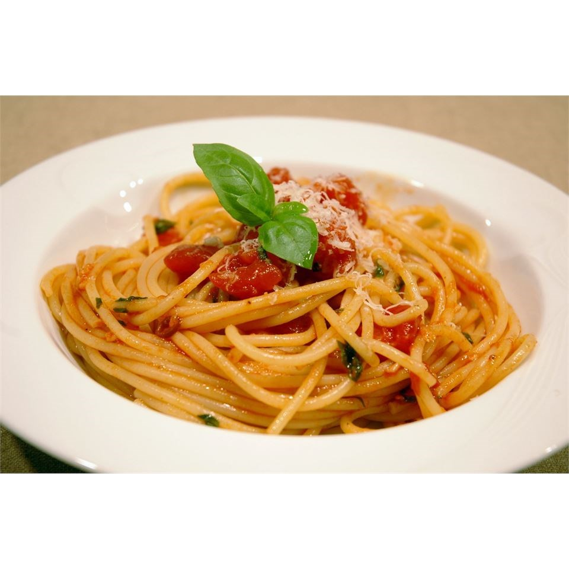

Simple Arrabbiata Sauce

Simple and spicy, with an incredible flavor.
Ingredients
- 2 (28 ounce) cans diced tomatoes
- 2 tablespoons olive oil
- 1 teaspoon crushed red pepper flakes
- 4 cloves garlic, minced
- ⅓ cup chopped fresh basil
- ½ teaspoon salt and pepper to taste
Steps
- In a large saucepan, combine tomatoes, olive oil, and red pepper flakes. Simmer 30 to 40 minutes, or until sauce is thickened. Stir in garlic, and simmer 10 minutes. Remove from heat, and stir in basil, salt and pepper.